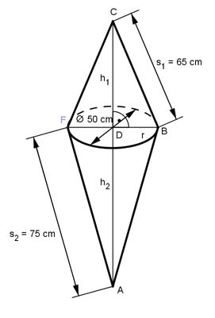

Aufgabe 194 Wie groß sind das Volumen V und die Oberfläche O des dargestellten Körpers?

V = VKegel1 + VKegel2 л * r2 * h1 VKegel1 = -------------- 3 r = d/2 = 50 cm/2 = 25 cm Satz von Pythagoras im Dreieck DBC: s12 = h12 + r2 | -r2 h12 = s12 - r2 h12 = 652 cm2 - 252 cm2 = 3 600 |√ h1 = 60 cm л * 252 cm2 * 60 cm VKegel1 = ---------------------- = 39 250 cm3 3 л * r2 * h2 VKegel2 = ------------- 3 Satz von Pythagoras im Dreieck ABD: s22 = h22 + r2 | -r2 h22 = s22 - r2 h22 = 752 cm2 - 252 cm2 = 5 000 |√ h2 = 70,7 cm л * 252 cm2 * 70,7 cm VKegel2 = ------------------------ = 46 250 cm3 3 V = 39 250 cm3 + 46 250 cm3 = 85 500 cm3 O = MKegel1 + MKegel2 MKegel1 = = л * r * s1 = л * 25 cm * 65 cm = 5 102,5 cm2 MKegel2 = = л * r * s2 = л * 25 cm * 75 cm = 5 887,5 cm2 O = 5 102,5 cm2 + 5 887,5 cm2 = 10 990 cm2